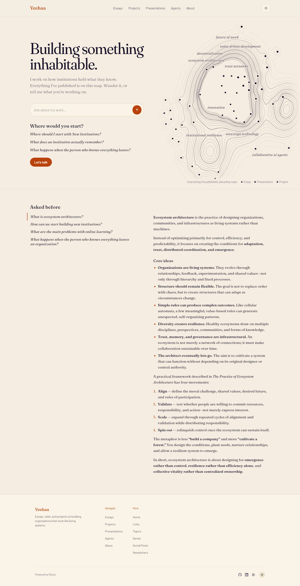
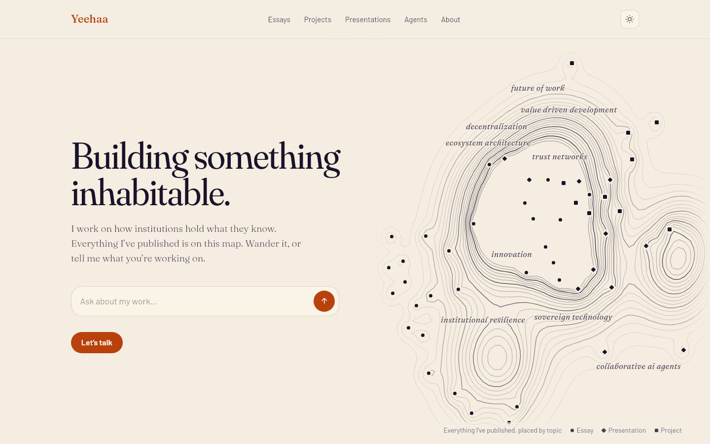
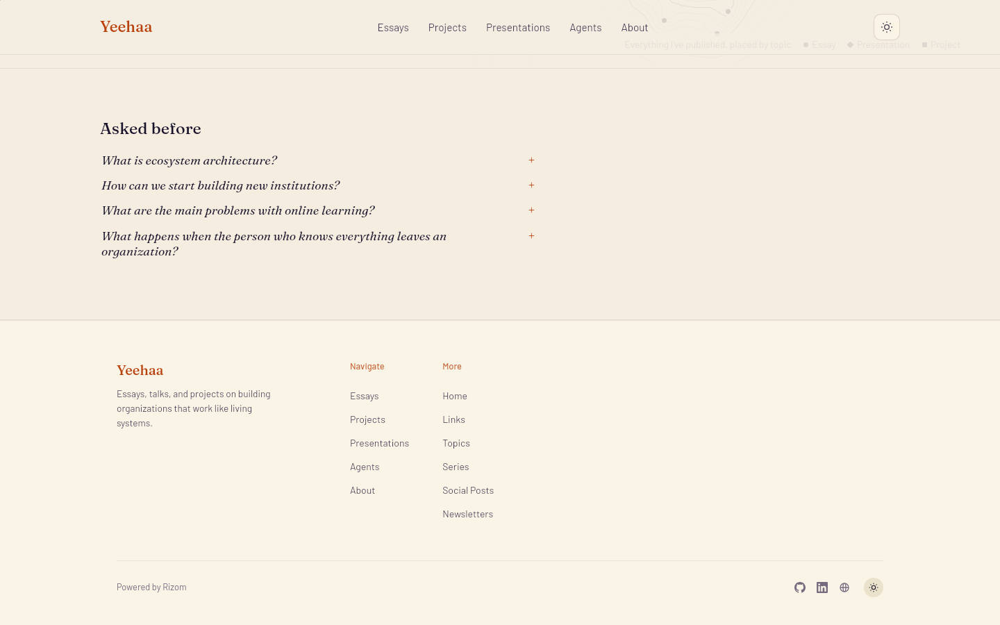
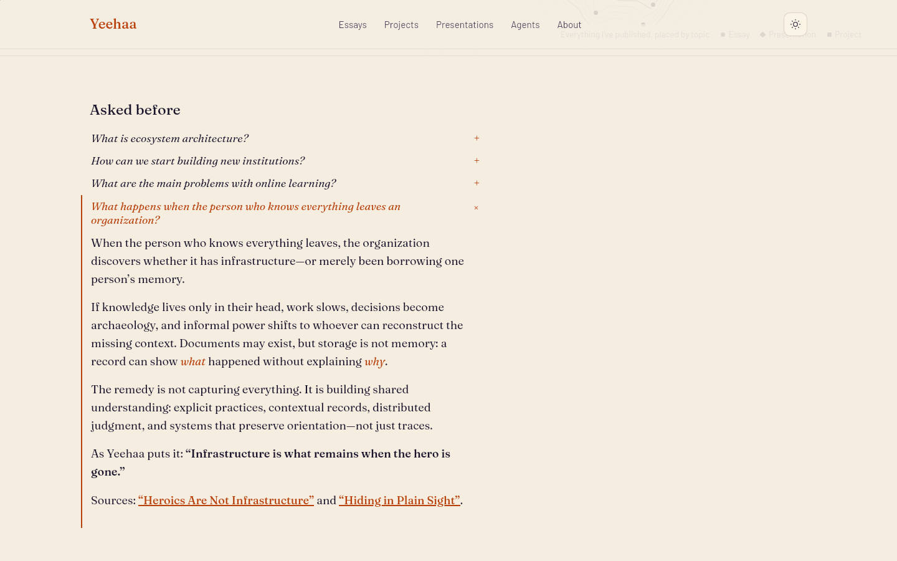
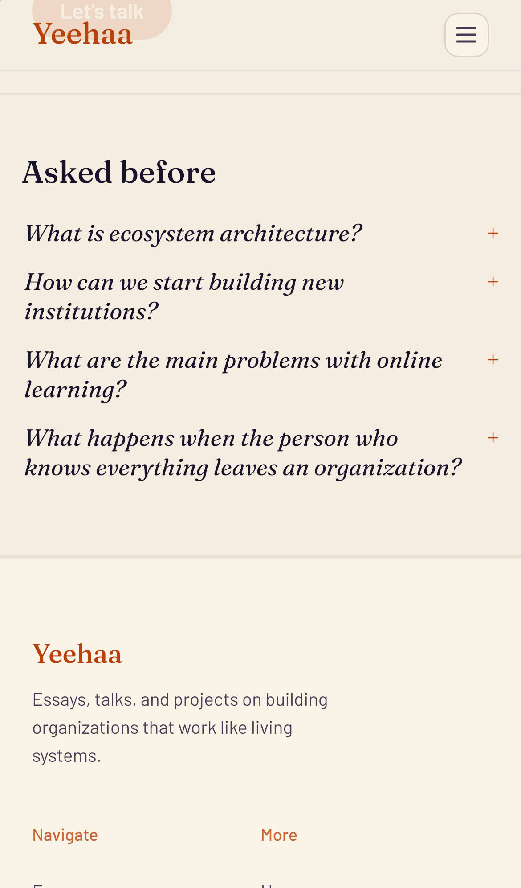
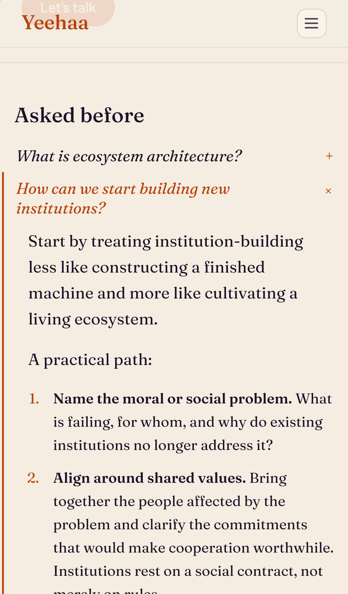

The opening ends at the box and "Let's talk". The FAQ band under the atlas is the page's one list of questions, every question closed until it is tapped. Every picture is the live preview in WebKit with yeehaa-faq-no-starters/proposal.css and proposal.js injected; the questions and answers are the published FAQs.
Desktop
Now: starters in the opening, the FAQ band under the atlas with one answer open

Proposed: the opening without starters

Proposed: the band, all closed

Proposed: one question opened

The page
The opening: title, introduction, the box, "Let's talk". No "Where would you start?".
The band: the owner's heading over the published FAQs, most asked first, up to six; a "+" on each, closed until tapped, one open at a time, the answer opening under its question. The same on desktop and phone; the side-by-side reader goes.
Without a script it is the same: native disclosures.
Screening scope
The starters were also screening's list of the site's subjects. Instead, screening reads the published topics and the introduction.
Topics today: brain architecture, collaborative AI agents, data-driven knowledge, decentralization, ecosystem architecture, future of work, innovation, institutional resilience, narrow artificial intelligence, sovereign technology, trust networks, value-driven development.
Introduction: "I work on how institutions hold what they know. Everything I've published is on this map."
It follows the work: a new topic from a new essay widens the scope with nothing to edit.
Phone
Proposed: closed

Proposed: one open

On a phone
Four short lines under the map and the opening; tapping one opens its answer beneath it, tapping again closes it.